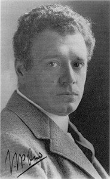

Artistas neoplasticistas
Theo van Doesburg, cuyo nombre de nacimiento era Emil Marie Küpper, fue
una de las figuras fundamentales en el desarrollo del neoplasticismo holandés tanto en pintura como en arquitectura.
De formación autodidacta, en sus primeros años
de dedicación a la pintura realizó obras ligadas al naturalismo y al impresionismo, y a partir de 1914
le influyó la obra de Wassily Kandinsky. Durante esta época, Van Doesburg entró en contacto con diversas personas ligadas a la teosofía, como su primera
esposa y el pintor Janus de Winter, que influyeron
en su modo de ver la vida y el arte y que dejarían más tarde una fuerte huella en el neoplasticismo. En 1915 conoció a Piet Mondrian, y un poco más tarde a Bart
van der Leck y al arquitecto J. J. P. Oud. Junto a ellos
y otros artistas fundó la revista De Stijl.
Su estilo evolucionó siguiendo las
teorías neoplasticistas, que defendían
el uso de la línea recta y de los colores primarios, en 1925 Van Doesburg
introdujo la diagonal en sus composiciones, lo que desencadenó
la ruptura definitiva con Mondrian.
{kind=link}
{kind=link}
Piet Mondrian,
el «pintor de los cuadraditos» fue un artista holandés que creó su obra en torno a la revista De Stijl, principal órgano de difusión neoplasticista.
Para tipos como Mondrian, el arte
debía ser representado a través de
líneas rectas y colores puros. Cada
uno tiene su opinión. En caso de
Mondrian, esto se debía a que lo
rectilíneo y lo cromáticamente puro
era un símbolo de la expresión del
orden cósmico.
Esto está vinculado a las teorías
teosóficas que estaban de moda en
la Europa de la belle epoque y que
a la larga no es más que un intento
de abstracción diferente al de
Kandinsky. Mucho más ordenado,
más matemático… y más frío.
Se formó como maestro de dibujo de educación obligatoria y a finales
de siglo en Amsterdam se empezó a relacionar con los innovadores
grupos artísticos del momento. Ahí pinta sus primeras obras, a años luz de
lo que vendría después: paisajes serenos, grises, tierras, tonos oscuros…
Pero en 1912 se traslada a París, donde conoció a gente como Leger o Braque
que le descubren el nuevo y loco arte del siglo XX. Al principio se hizo cubista
como ellos, pero poco a poco se fue interesando más por la abstracción.
La Gran Guerra llegó y el artista regresó a los Países
Bajos, donde conoció a los que serían sus compañeros
de movimiento, Bart van der Leck y Theo van Doesburg.
Con ellos y otros más (arquitectos, diseñadores…)
funda la revista De Stijl.
Al final Van Doesburg
acabaría usando diagonales, aburrido de tanta línea monótona, y un ofendido Mondrian se separaría definitivamente del grupo
por semejante sacrilegio.
Pieter Oud estudió de 1904 o 1907 en lo Escuela de Artes y Oficios de
Amsterdam y trabajó en el despacho de Petrus J.H. Cuypers. Más tarde
completó su formación en la Escuela Estatal de Dibujo de Amsterdam y luego
en la Escuela Técnica Superior de Dellt. Incitado por Hendrik-Petrus Berlage se
fue a Munich a trabajar con Theodor Fischer, y en 1912 se estableció como
arquitecto independiente, primero en Purmerend y luego en Leiden. En
colaboración con su ami¬go, el artista y arquitecto Thea van Doesburg, diseñó
en 1916 la Casa Geus y fundó el equipo de trabajo De Sphinx. Ambos fueron en
1917 los cofundadores, junto con Piet Mondrian, Vilrnos Huszar y Antony Kok,
de De Stijl, famoso grupo de artistas y de una revista, que Oud abandonó en 1920,
por diversidad de pareceres con Van Daesburg.
Un intento de llevar a lo práctico las teorías de De Stijl fue el
proyecto de casas adosadas de Scheveningen y el café De Unie
en Rotterdam (1924-1925), ya desaparecido, en el que la fachada
fue tratada como una composición gráfica empleando en ella luminosos colores primarios, como el rojo, amarillo y azul,
combinado con colores como el negro y el blanco.

{kind=link}